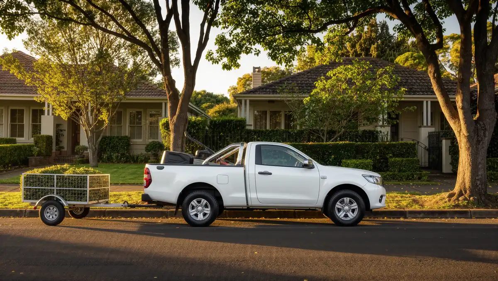

About Greenline Garden Care
A two-person lawn and garden team in the Hills District.
The same two people, every visit.
Greenline Garden Care is two people with a ute, a trailer and a mower, looking after lawns and gardens across Castle Hill, Baulkham Hills, Kellyville and Bella Vista.
Most of what we do is regular mowing for the same homes, with hedging, clean-ups and new turf in between. Because it’s just the two of us, we get to know each yard.
- Team
- Two people
- Hours
- Mon–Fri 7am–5pm, Sat 7am–1pm
- Areas
- Castle Hill, Baulkham Hills, Kellyville and Bella Vista
Need a landscaper in Castle Hill?
Call, text or send us the job details. Mon–Fri 7am–5pm.